Rated Excellent Based on 27,392+ reviews

Rated Excellent Based on 27,392+ reviews
Relieve Back Pain
and Sciatica
Without Surgery
Rated Excellent Based on 27,392+ reviews
Relieve Back Pain and
Sciatica Without Surgery
Decompress your spine, release pinched
nerves, and rehydrate discs in just 15
minutes a day.
- Relieve spinal pressure in as little as 30 seconds
- Rehydrate dried-out discs to their natural cushioning
- Treat the root cause of sciatica
- Save thousands on chiropractors and massage therapy
- Correct spinal alignment to prevent future injury
Risk-free 90-day trial. Over 217,013 sold.
Ship by 17th Mar | Stock Levels
 Low
Low"I was skeptical that anything could work this fast, but within 10 minutes of lying on it, I felt a distinct 'pop' and the pressure released. It’s the first time I’ve been pain-free in 5 years."
— Sarah J., Verified Customer
Join Thousands Of
Happy Customers
The Non-Surgical Breakthrough for
Chronic Back Pain
and Sciatica
Use medical-grade decompression to
restore fluid to your spine and
permanently
fix the root cause of your pain.
The Problem:
Your Discs Are Drying Out
Stop Treating Symptoms and Fix the Root Cause Your spine is likely starving for oxygen. After age 30, spinal discs dry out and shrink. This crushes the vertebrae together and suffocates the nerves inside. Pills only mask the pain signal. Stretching just pulls the muscles. Neither method restores the lost fluid needed to fix the pain.
Research from the British Medical Journal confirms that 90% of sciatica stems from herniated discs, a condition caused when 'dehydrated' discs lose their fluid and crack.
I was skeptical that a home device could do what my doctor couldn't. But after just one session, that deep, crushing ache in my lower back finally vanished. It really works.
— James R. 57, Verified Customer
The Solution:
TriCore System™
Decompress, Rehydrate, and Lock in 15 Minutes: This device attacks pain with three simultaneous therapies backed by spinal mechanics:
1
Dynamic Traction (Mechanical Decompression): Creates space between vertebrae to lower pressure. This "vacuum effect" retracts bulging discs and frees pinched nerves instantly.
2
Thermal Hydro-Therapy: Dilates blood vessels to flood bloodless discs with oxygen and nutrients. This restores the fluid volume needed to cushion your spine.
3
Neuromuscular Vibration: High-frequency waves block pain signals immediately. This relaxes tight muscles to "lock" your new alignment in place.
"I was shocked at how fast it worked. The combination of the stretch and the deep tissue massage relaxed my back immediately. I stood up straighter than I have in years."
— Linda S. 62, Verified Customer
The Device Doctors Are
Buying for Themselves
Top orthopedic surgeons and neurosurgeons aren't just recommending this to patients, they are using it personally. It delivers the same medical-grade decompression found in clinics, allowing you to avoid risky steroid injections and surgeries that often fail.
"The number one reason back pain returns is muscle tightness pulling the spine back out of alignment. By combining traction with heat and vibration, this device relaxes the muscles so the decompression actually lasts. It’s a brilliant combination."
— Sarah J., Physical Therapist
"In my clinic, we use decompression tables that cost over $10,000. This home device uses the exact same principle—axial traction—to offload the spine. It is an excellent tool for patients who cannot come into the clinic, allowing them to get professional-grade relief at home."
— Dr. A. Roberts, Orthopedic Physical Therapist
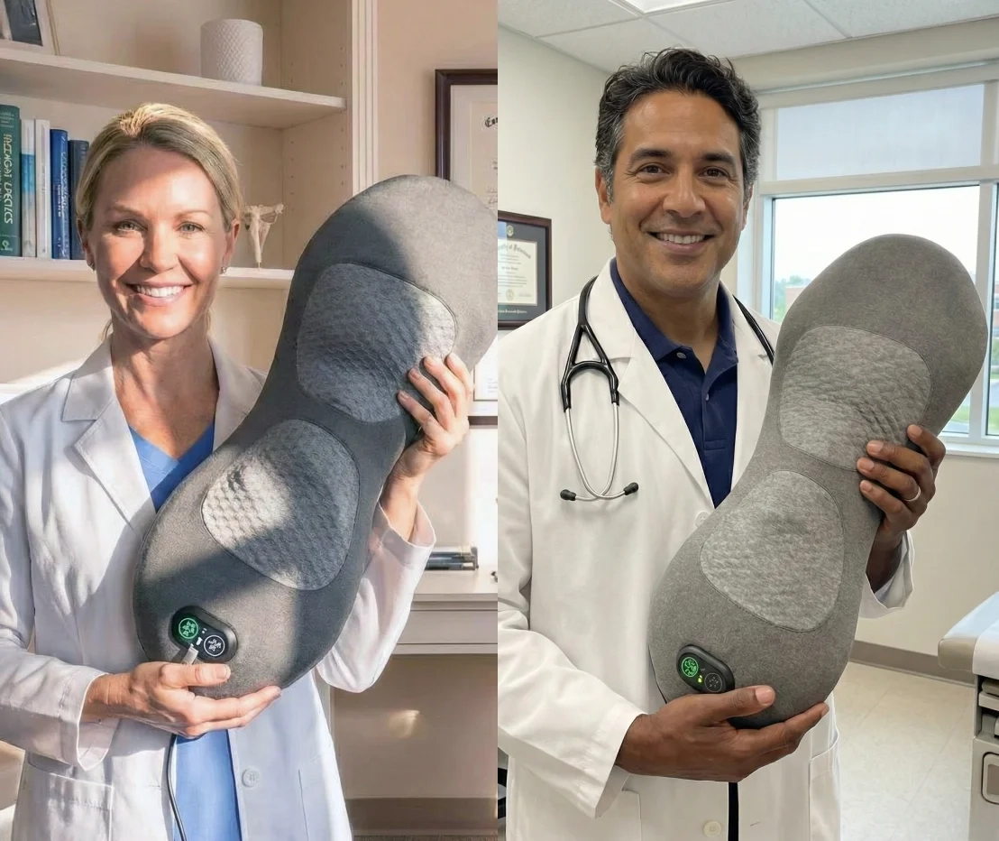
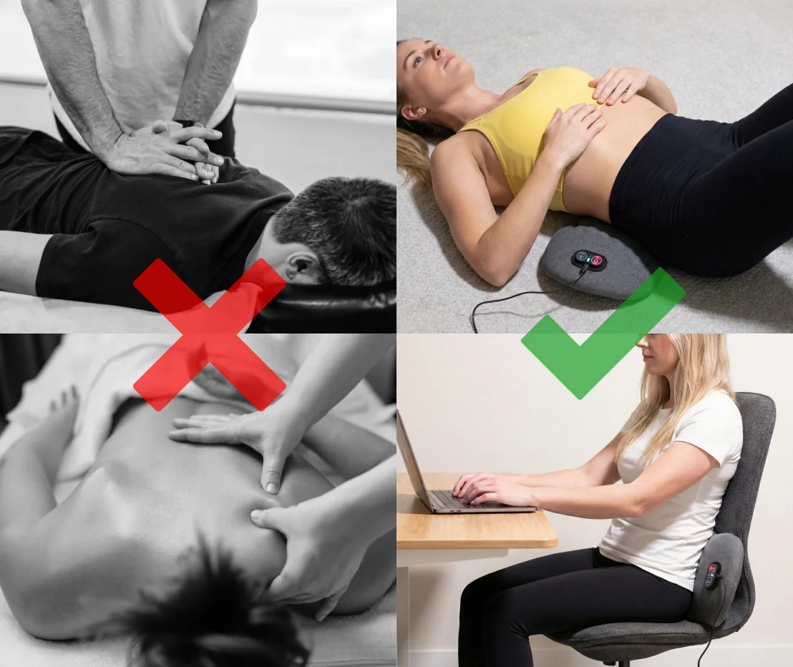
Why Traditional Treatments Fail
Most treatments only fix half the problem. Chiropractors align the bone, and massage relaxes the muscle, but neither addresses the dried-out disc causing the agony. Surgery is invasive, irreversible, and should be a last resort.
SpineRelief is currently one of the only methods that combines decompression and heat to actively rehydrate the disc, fixing the mechanical root cause that other therapies miss.
My doctor told me surgery was the only option left. I was terrified of going under the knife, so I tried this as a last resort. After two weeks of daily decompression, the shooting pain stopped. I cancelled my surgery.
— David M., 47, Verified Buyer
Risk-free 90-day trial. Over 217,013 sold.
Ship by 17th Mar | Stock Levels
LowThe SpineRelief Advantage
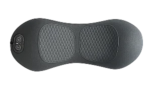 | |||||||
Chiropractor | Pain Meds | Massage Gun | |||||
|---|---|---|---|---|---|---|---|
TriCore System™ | |||||||
| Treats Root Cause? | |||||||
| Long-Term Relief? | |||||||
| Safety / No Side Effects | |||||||
| Cost | Under $100 one time | up to $160 per visit | up to $130 per visit | $199 – $399 | |||
| Convenient | |||||||

Buy with Confidence - It’s
100% Risk-Free!
Enjoy the SpineRelief at home for a full 90 days. If it does not hold up to real play or your family does not love it, send it back for a full refund. No hassle and no questions asked.
Risk-free 90-day trial. Over 217,013 sold.
Ship by 17th Mar | Stock Levels
Low3 Simple Steps to
Relieve Your
Sciatica
and Back Pain
1. Position & Prepare
Place the device on a flat surface like your floor or bed. Plug it in and position the curved arch under your lower back.
2. Select Your Mode
Lie back and use the remote to start the Tri-Therapy™. Choose "Auto" for the full experience or manually adjust the heat and traction intensity.
3. Relieve the Pressure
Relax for 15 minutes as the device gently stretches your spine. Feel the pressure release from your nerves and the pain melt away as discs rehydrate.
1. Position & Prepare
Place the device on a flat surface like your floor or bed. Plug it in and position the curved arch under your lower back.
2. Select Your Mode
Lie back and use the remote to start the Tri-Therapy™. Choose "Auto" for the full experience or manually adjust the heat and traction intensity.
3. Relieve the Pressure
Relax for 15 minutes as the device gently stretches your spine. Feel the pressure release from your nerves and the pain melt away as discs rehydrate.
Real Users, Real
Life-Changing
Results
| Pain Relief | 4.9 | |
| Build Quality |  | 4.8 |
| Ease of Use | | 4.9 |
| Heat Intensity | 4.7 | |
| Value for Money | 4.9 |
4.8
Based on reviews from
27,392+ customers
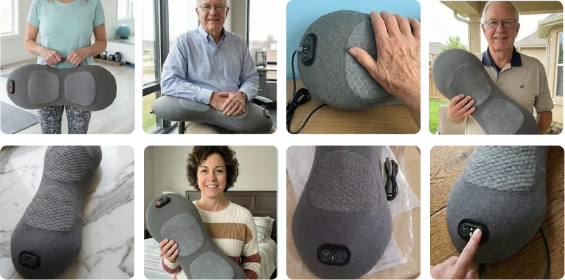
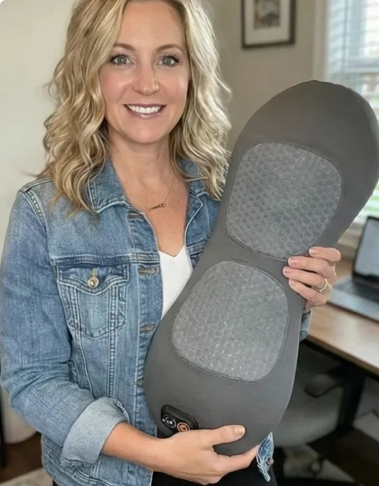
Posted TodayCancelled my surgery
My doctor wanted to fuse L4 and L5. I bought this out of desperation. After 3 weeks of daily use, the shooting nerve pain is gone. I went back for a checkup and we decided to postpone the surgery indefinitely.
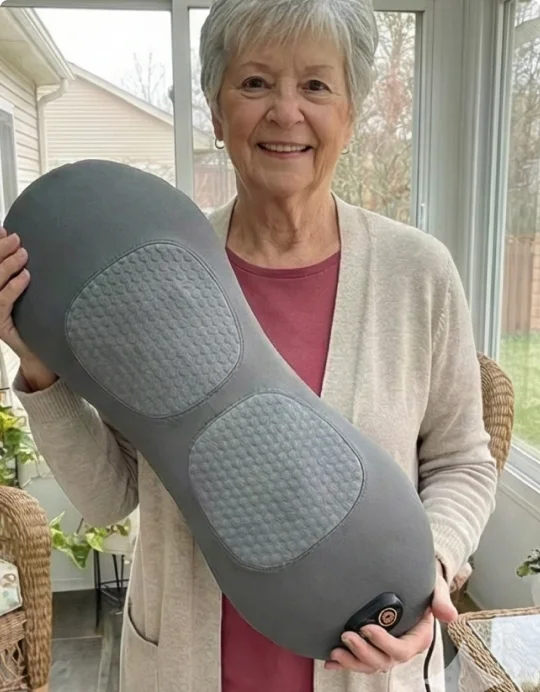
Posted TodayI can put my own socks on again.
It sounds small, but for the first time in years, I could bend down to tie my shoes without a sharp pain shooting up my leg. After just one week of decompression, I have my flexibility, and my independence, back.
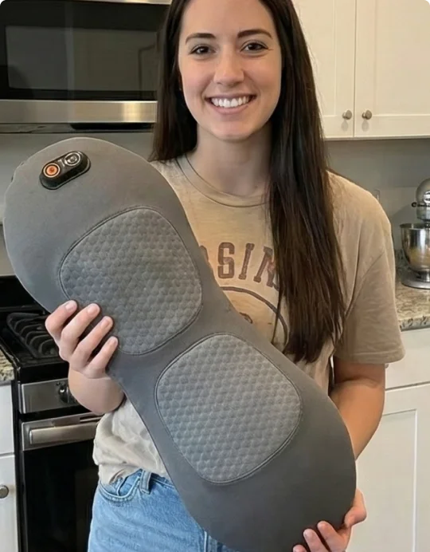
Posted TodayHelped my L5-S1 Herniation
I have a bulging disc pressing on my sciatic nerve. Sitting is agony. This device gently pulls the spine apart to take the pressure off. I can actually sit through a movie with my family again without needing to stand up every 10 minutes.
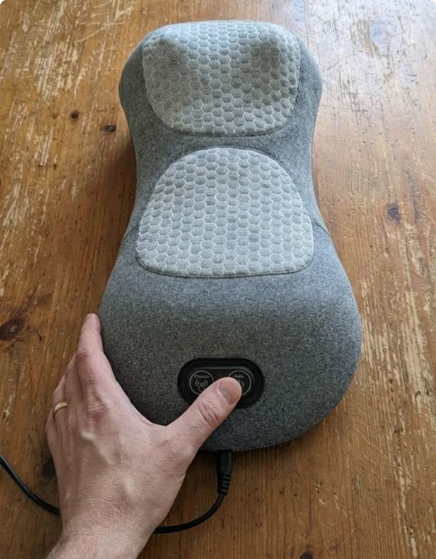
Posted TodaySaves me $300 a month
I used to go to the chiropractor every Friday just to get through the weekend. This device gives me that exact same 'decompression' feeling at home. It paid for itself in two weeks.
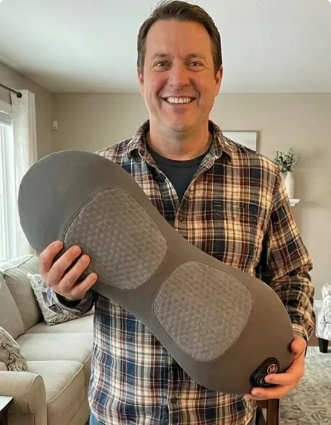
Posted TodayThe heat function is incredible
A lot of these devices get 'warm,' but this actually gets HOT (in a good way). It feels like a hot stone massage while it stretches you. It drives the blood flow right into the sore spot. Absolutely heavenly.
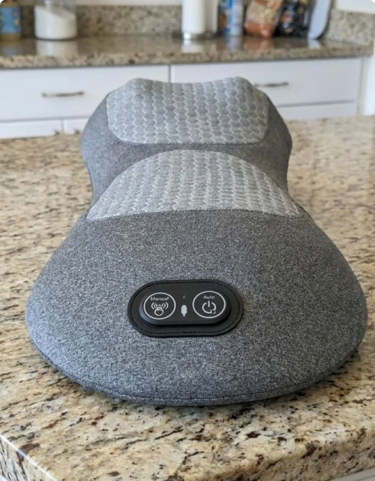
Posted TodayMore Useful Than I Expected
I lay concrete for a living, so my back is destroyed by 5 PM. I use this for 15 minutes every day when I get home. It undoes 8 hours of heavy lifting. If you work with your hands/body, you need this machine.
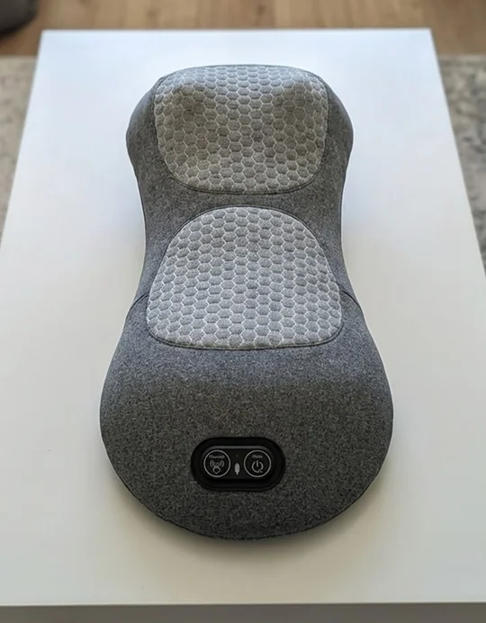
Posted TodayFinally felt the 'pop' I needed
I’ve tried foam rollers and yoga, but I could never get that deep release in my lower back. Within 5 minutes of using this on the 'High' traction setting, I felt a distinct release like a pressure valve opening up. The relief was instant..
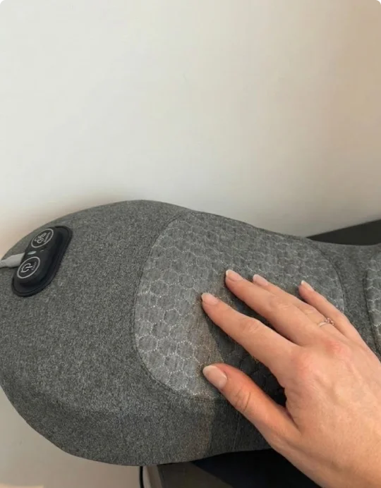
 Posted Today
Posted TodayI was skeptical, but it works
I’ve bought so many 'back fixers' from Instagram that were trash. This is the first one that actually does what it says. The traction is legit, you can feel your spine lengthening.
Rated Excellent Based on 27,392+ reviews
Rated Excellent Based on 27,392+ reviews
Don't Miss Out On
This Limited-Time
Offer. Order Now
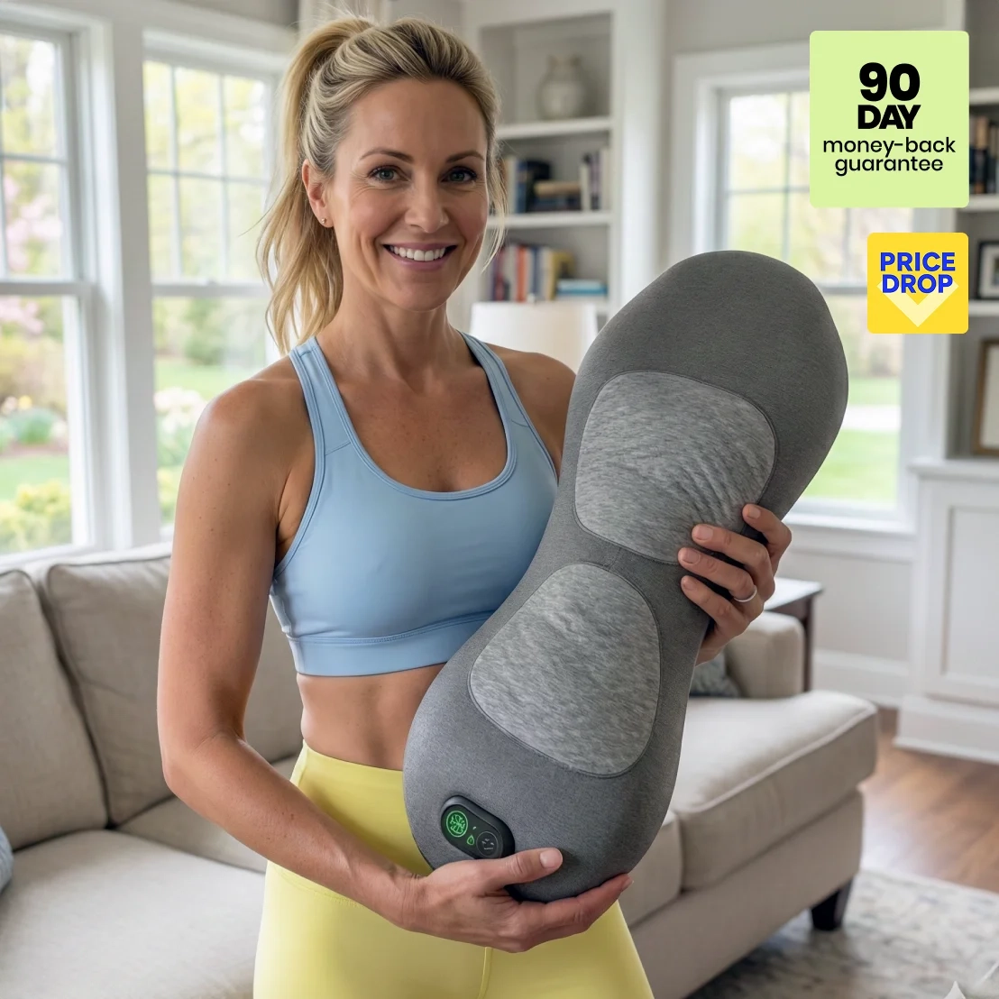
Rated Excellent Based on 27,392+ reviews
Don't Miss Out On
This Limited-Time
Offer. Order Now
Decompress your spine, release pinched
nerves, and rehydrate discs in just 15
minutes a day.
- Fast 2-3 shipping from our US Warehouse
- 90 Day Back Guarantee
- Top-Notch Support Team
Risk-free 90-day trial. Over 217,013 sold.
Ship by 17th Mar | Stock Levels
Low“This is the best investment I have ever made for my health. It costs less than two visits to my specialist and gives me relief every single day. Worth every penny.”
— David B., Verified Customer
Frequently Asked Questions
The device is specifically designed to treat the root causes of chronic back pain. It is highly effective for sciatica, herniated or bulging discs, spinal stenosis, pinched nerves, and general lower back stiffness. By gently stretching the spine, it relieves the pressure that causes these conditions.
Foam rollers only massage the surface muscles, and inversion tables can be dangerous or hard to use. This device uses Dynamic Axial Traction. It actively pulls the vertebrae apart to create a vacuum effect, allowing the discs to rehydrate and heal. It does this safely while you lie flat on the floor.
The device is designed to be "one size fits most." It is built with reinforced materials to support up to 300 lbs (136 kg). The curvature is ergonomically designed to fit the natural arch of the lumbar spine for people of all heights.
For the best results, we recommend using the device for 15 minutes a day. Consistency is key to rehydrating the discs and maintaining proper alignment. You can use it in the morning to loosen up for the day, or at night to relieve the pressure before bed.
Many of our customers use this device after surgery to maintain spinal health, but you must consult your doctor or surgeon first. Every surgery is different, and we want to ensure it is safe for your specific situation.
You will feel a strong stretching sensation, but it should not be painful. The device has multiple intensity levels, so we recommend starting on the lowest setting and working your way up as your flexibility improves. Most users find the combination of heat and traction incredibly relaxing.
Risk-free 90-day trial. Over 217,013 sold.
Ship by 17th Mar | Stock Levels
LowShip by 17th Mar | Stock Levels
Low